FIU Master of Architecture — Design Studio 2
The task was to design a patio house for a specific artist, taking their artistic style, story, and values as the foundation for the design. My client was Carmen Herrera — a Cuban-born, American painter (1915–2022) known for boldly colored, sharply defined geometric abstraction. She studied art in Paris, made New York her permanent home in 1954, and remarkably didn’t sell her first painting until 2004, at age 89 — after which her work entered major museum collections and earned international recognition.
The house is organized around a bedroom, bathroom, garden, gallery, studio, deck areas, and a foyer — each given its own relationship to the sloped site, with a pool and stepped outdoor terraces tying the whole plan together.
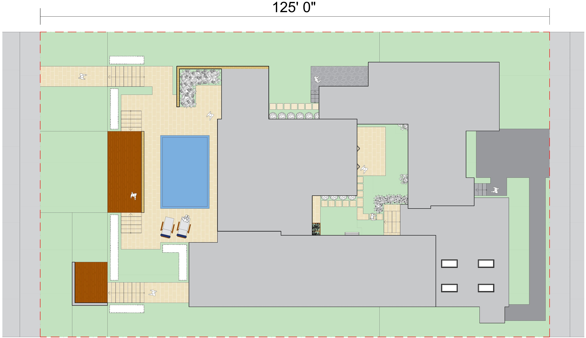
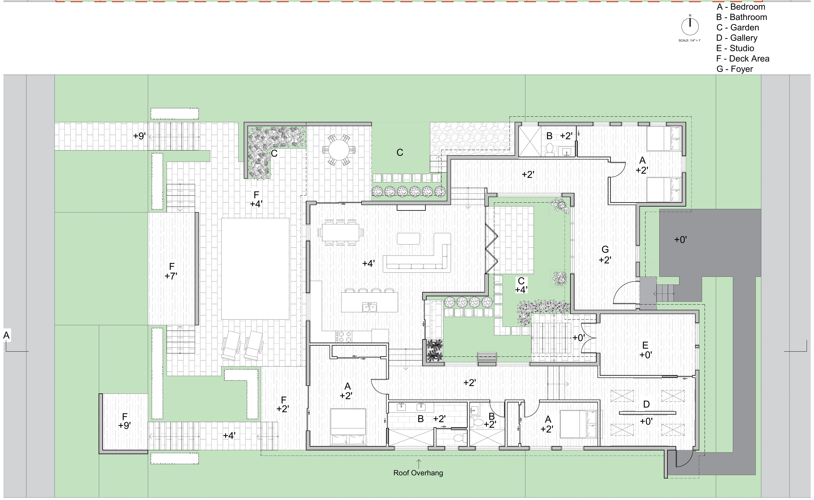
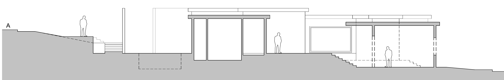
Longitudinal section
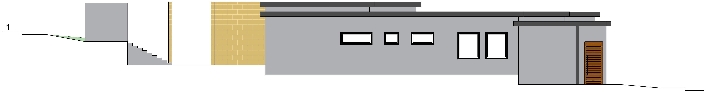
Elevation
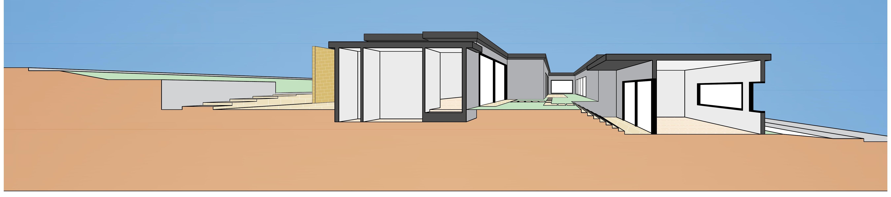
Longitudinal section, rendered
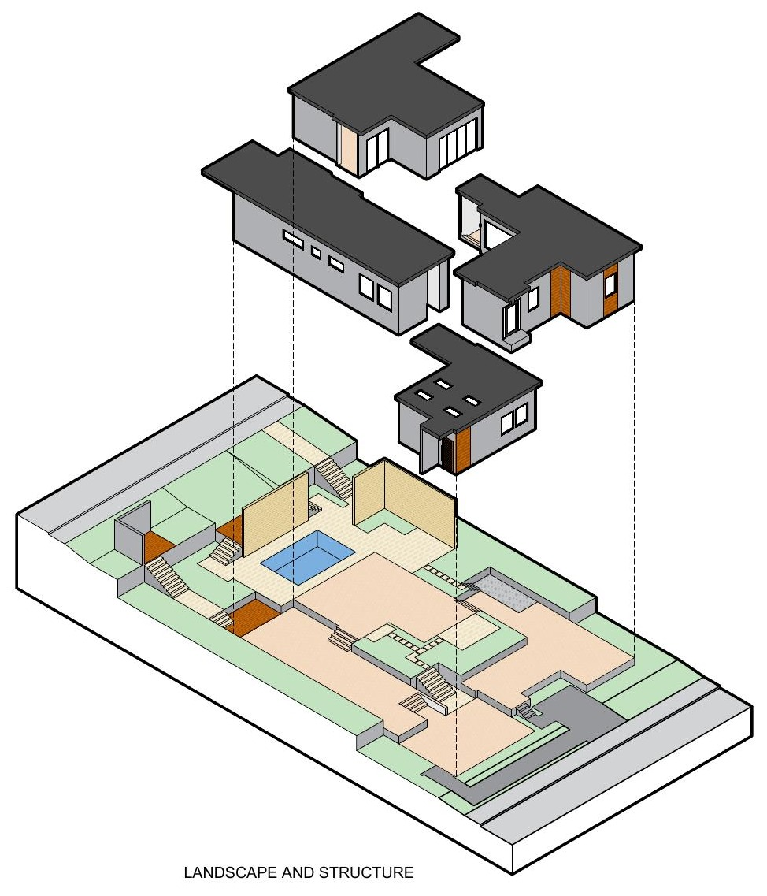
Landscape & structure
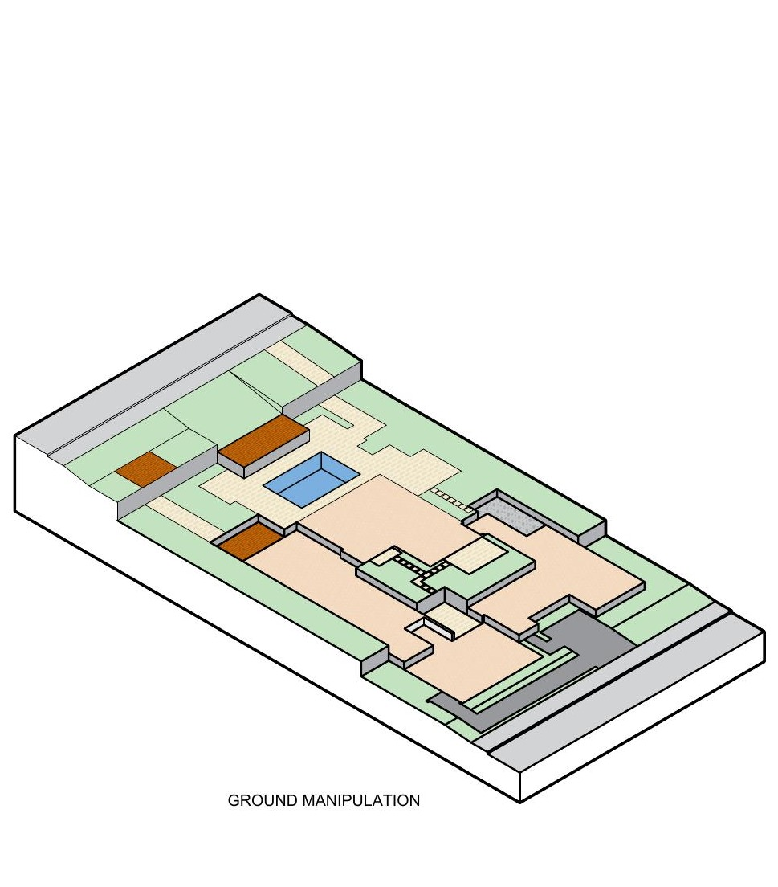
Ground manipulation
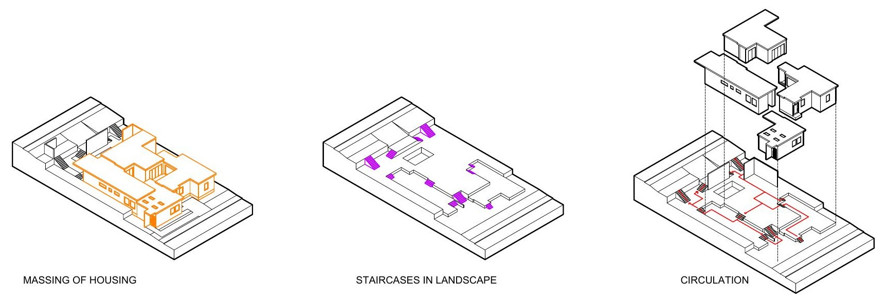
Massing of housing · Staircases in landscape · Circulation
Carmen Herrera was a Cuban-born and raised American painter, born on May 31, 1915, and died on February 12, 2022. Known for her minimalist and abstract paintings, she moved to Paris as a teenager to study art, and attempted a career in Architecture, which did not come to fruition due to Cuba’s unstable situation. She continued to pursue her studies in art in New York and Paris again. Her artistic identity was one of boldly colored and sharply defined geometric shape paintings. She made New York City her permanent home in 1954, where for years she only exhibited some of her art sporadically. It wasn’t until 2004 (at the age of 89) that she sold her first painting. After being included in NYC’s latincollector gallery, her art-world stock skyrocketed. Her works were acquired for permanent collections in several museums, and won accolades in London for several solo exhibitions.
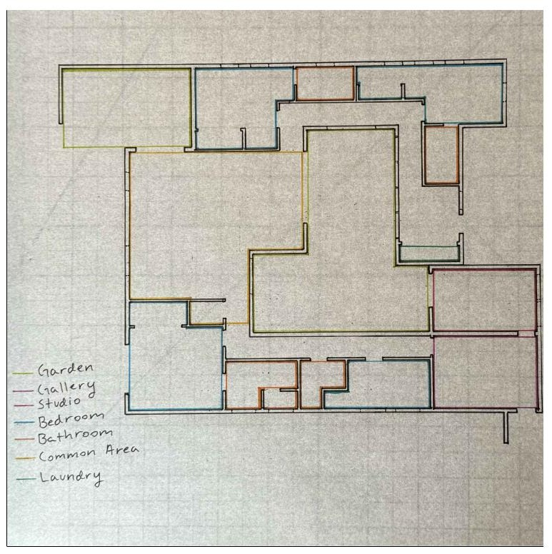
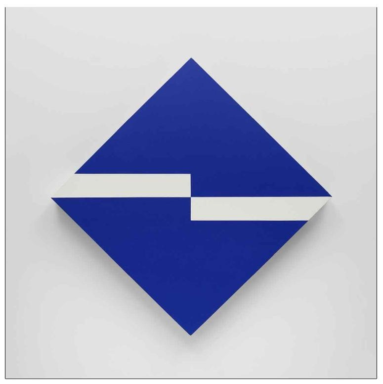
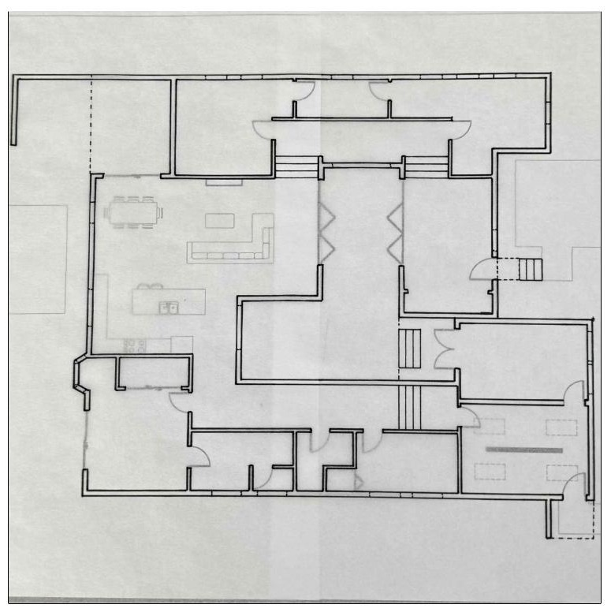
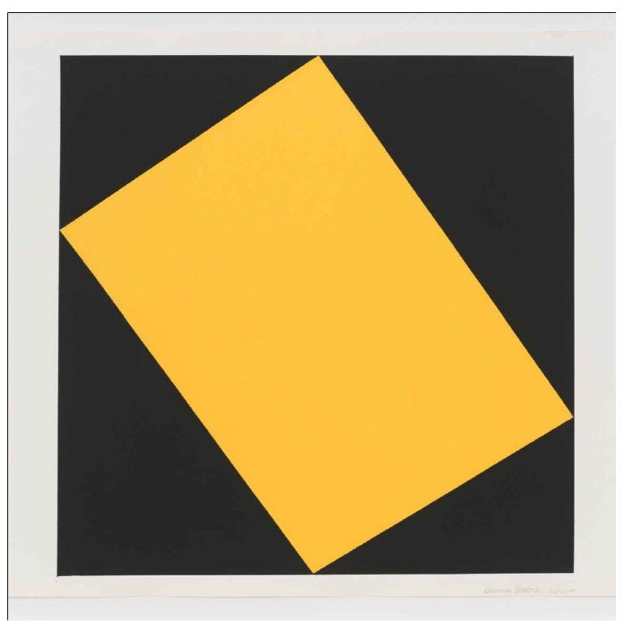
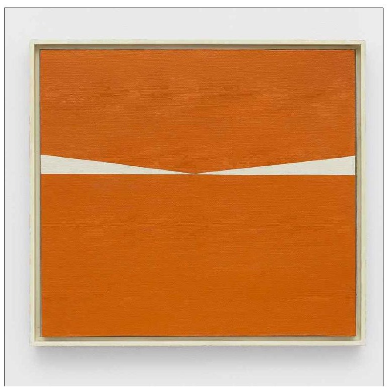
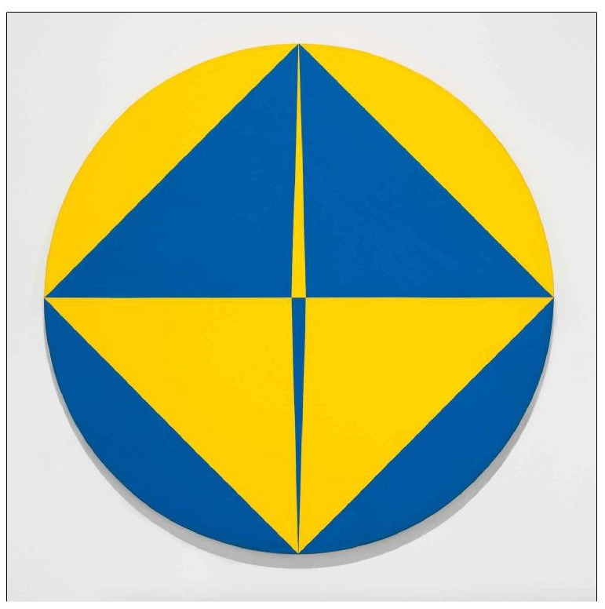